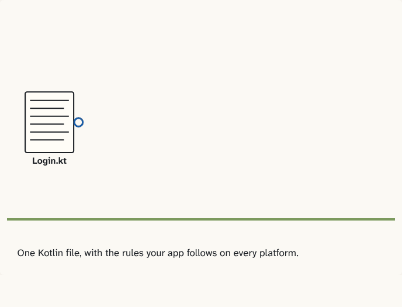

Free courses · 10 puzzles so far · about 50 minutes
Kotlin Multiplatform, from the compiler up
How one Kotlin codebase runs on Android and on an iPhone that has no JVM, what Swift actually sees of your code, how memory and threads behave on iOS, and how Compose Multiplatform draws your UI there. Built from the compiler up, one small puzzle at a time.

How it works
Each puzzle starts with a problem shared code has to solve, gives you one building block, shows it in a diagram that plays itself, and ends with three questions you have to answer to unlock the next one. Facts come from Kotlin's own documentation, linked on every page. How these courses are made, and how they're checked →
Modules
Every puzzle opens: start wherever you like. Each one builds on the ones before it; its check tells you you're ready for the next. ✓ marks the ones you've passed (saved only in this browser).
Module 1: One codebase, two worlds
From one source file to two kinds of machine code, and how Swift sees what you built. Know this already? Take the check →
- Start here: One Kotlin, many machines Your app's rules are written twice, once in Kotlin for Android and once in Swift for iOS. Here's how one Kotlin file ends up running on both, even though an iPhone has no JVM.
- What every target has In puzzle 0, one Kotlin file became bytecode and native code. But some code only makes sense on one platform. Here's how a project says which code goes where. Builds on 0.
- A promise and its keepers In puzzle 1, common code couldn't call a platform's own APIs. But shared logic sometimes needs a small platform fact, like which phone it's running on. Here's how it asks without knowing. Builds on 1.
- How Swift sees your Kotlin In puzzle 0, Kotlin/Native turned your code into native code for the iPhone. But the iOS app is written in Swift. Here's how Swift finds and calls what you built. Builds on 0.
- Lost in translation In puzzle 3, Swift saw your Kotlin through an Objective-C header. Objective-C is simpler than both languages, so some things don't make it across. Here are the three that bite. Builds on 3.
Module 2: Living on iOS, and sharing the UI
Memory, threads and shipping on iOS; then what Compose Multiplatform shares and how it draws there. Know this already? Take the check →
- Two ways to free memory Your shared Kotlin runs inside an iOS app. Kotlin's objects are freed one way, Swift's another. Here's what happens where they hold on to each other. Builds on 2.
- Whose thread is it? Your shared code uses coroutines and Dispatchers.Main. On Android, that's the main Looper. On iOS there's no Looper. Here's where your coroutines run, and the one thing Swift can't do to them. Builds on 4.
- One framework, not two In puzzle 3, Kotlin/Native packed your shared code into a framework. Your project has several shared modules. Here's why they should reach Swift as one framework, and what each exported line costs. Builds on 3.
- What Compose actually shares One set of Compose UI code runs on Android and on iOS. "Same code" hides three layers. Here's which ones are shared, and the one that's written again for every platform. Builds on 1.
- One canvas on iOS On iOS, your Compose screen doesn't become UIKit buttons and labels. It's drawn. Here's what UIKit sees, and why VoiceOver and native controls need a bridge. Builds on 8.
Module 3: Compose Multiplatform in practice (next)
Touch, scrolling and text input on iOS; accessibility through VoiceOver; interop with SwiftUI and UIKit in both directions; resources and navigation.